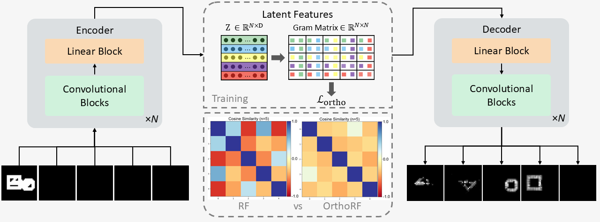
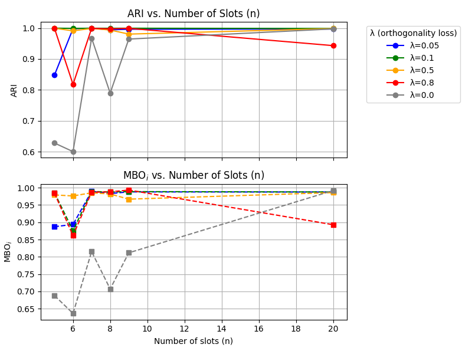

Introduction
According to the temporal correlation hypothesis, the human brain seamlessly processes the complex geometric
structures of its environment by leveraging synchrony in neurons. Instead of relying on static activations,
biological vision operates through complex spatiotemporal dynamics where spiking neural networks bind
distinct features of a single object simply by "firing together" in time. These wave-like biological
processes mirror fundamental forces in nature, such as electromagnetic fields, which naturally organize
information through phase and amplitude.
This intersection of physics and neuroscience inspires a critical shift in machine learning: moving away
from static scalar processing toward dynamic, wave-inspired representations. Early artificial intelligence
models, such as Complex-valued AutoEncoders (CAE) [1], attempted to replicate this biological binding
mechanism by mapping phase and amplitude onto 2D complex numbers, where the phase represents object
identity. To scale this concept to complex, real-world visual data, the Rotating Features (RF) [2]
architecture extended this framework into higher-dimensional vector spaces. In an RF model, the magnitude of
a vector
denotes the presence of a feature, while its high-dimensional orientation, or rotation, encodes its
affiliation with other vectors.
Building directly on this paradigm, OrthoRF (Orthogonal Rotating Features) introduces a competitive
synchronization mechanism to achieve unsupervised object-centric learning. Crucially, OrthoRF enforces a
strict geometric constraint: it mathematically drives the high-dimensional rotating representations of
different objects to be separated by exactly 90° in the latent phase space. By enforcing this
absolute orthogonality, distinct object components are mapped to mutually independent, non-overlapping axes.
This disentanglement allows OrthoRF to naturally resolve complex occlusions and separate overlapping
regions, achieving clean object discovery without relying on post-hoc clustering algorithms.

Overview of the OrthoRF Architecture. The model utilizes an autoencoder with standard scalar-valued weights,
while maintaining $n$-dimensional (lifted) vector activations across all layers. Competitive binding is
enforced at two stages: first, in the binding mechanism by applying a softmax
across rotations; and second, through an orthogonality loss computed as the dot product between rotational
vectors.
How OrthoRF works
The OrthoRF architecture is built on an autoencoder framework that maintains standard scalar-valued weights
while operating entirely on $n$-dimensional (lifted) vector activations across every layer—from the
initial input to the final output.
To achieve distinct object separation, OrthoRF enforces competitive binding through two core components:
-
Competition in the Binding Mechanism: The binding mechanism [3] is
essential for object-centric representations, as it prevents destructive interference from
suppressing object signals in the final output. We introduce competition by applying a SoftMax
across rotations at every layer, encouraging clearer assignment of features to distinct object
components.
-
The Orthogonality Loss: The network mathematically reinforces this
competition using a
structural penalty, calculated as the unormalized dot product between the rotational vectors at the
encoder output, to
drive
their
mutual separation. We apply this constraint at the encoder because it aggregates global object
information
into a
compact representation, making the regularization both effective and computationally efficient.
Let the encoder output be
\(\mathbf{z} \in \mathbb{R}^{\mathrm{bs} \times n \times z_{\mathrm{dim}}}\),
where \(\mathrm{bs}\) is the batch size, \(n\) is the number of orientation components, and
\(z_{\mathrm{dim}}\) is the feature dimension. For each sample, we first center the latent vectors
across
the
orientation dimension:
\[
\tilde z_{ikj} = z_{ikj} - \bar z_{ij},
\qquad
\bar z_{ij} = \frac{1}{n} \sum_{m=1}^{n} z_{imj}.
\]
We then stack the centered latent vectors into a matrix
\(\tilde Z_i \in \mathbb{R}^{n \times z_{\mathrm{dim}}}\)
and compute its Gram matrix:
\[
G_i = \tilde Z_i \tilde Z_i^\top .
\]
Each off-diagonal entry of \(G_i\) measures the similarity between two latent orientation
components. If
different
components encode distinct object information, these similarities should be close to zero. We
therefore
penalize
the off-diagonal entries of the Gram matrix:
\[
\mathcal{L}_{\mathrm{ortho}}
=
\frac{1}{\mathrm{bs}\, n (n-1)}
\sum_{i=1}^{\mathrm{bs}}
\sum_{k \neq \ell}^{n}
(G_i)_{k\ell}^{2}.
\]
Minimizing this loss decorrelates the latent components and promotes orthogonal representations,
encouraging
different rotations to specialize on different objects. The orthogonality term is combined with the
reconstruction
objective through a weighting parameter \(\lambda\):
\[
\mathcal{L}_{\mathrm{total}}
=
\mathcal{L}_{\mathrm{REC}}
+
\lambda \mathcal{L}_{\mathrm{ortho}},
\qquad \lambda > 0.
\]
This regularization plays a key role in enabling object separation without requiring explicit
clustering.
Results
In the paper, we include results on object discovery, boundary completion, highly overlapping scenes, noisy
datasets, and out-of-distribution tests.
Observations
OrthoRF achieves comparable object discovery performance and outperforms RF in boundary completion
To evaluate whether boundary completion is consistent across the dataset, we use labels that reveal the
hidden object parts.
Quantitative results show that OrthoRF outperforms RF in boundary completion, while achieving comparable
object discovery performance when overlapping regions are excluded from evaluation.
Large rotation dimensionality does not hurt feature binding or object separation
We find that using higher-dimensional rotations does not harm the model’s ability to bind features or
separate objects.
We study the effect of varying the orthogonality loss weight \(\lambda\) and the number of slots \(n\) on
ARI and MBO.
For larger \(n\), performance remains high across different \(\lambda\) values, while for smaller \(n\),
sufficient
orthogonality regularization \((\lambda > 0)\) is crucial for effective object separation.

Effect of varying the orthogonality loss weight \(\lambda\) and the number of slots \(n\) on ARI and
MBO.
For larger \(n\), performance remains high across different \(\lambda\) values, while for smaller \(n\),
sufficient orthogonality regularization \((\lambda > 0)\) is crucial for effective object separation.
Conclusion
In this work, we presented OrthoRF, an object-centric autoencoder that addresses a key limitation of
Rotating Features in highly overlapping scenes. By combining competitive binding with an orthogonality loss,
OrthoRF encourages each object to align with a distinct latent orientation component, removing the need for
post-hoc clustering.
Across object discovery and boundary completion tasks, OrthoRF achieves strong performance while also
recovering occluded object parts. More broadly, our results show that orthogonality is a useful inductive
bias for turning distributed representations into more discrete, interpretable, and robust object-centric
representations.
References
[1] Löwe, S., Lippe, P., Rudolph, M., & Welling, M. (2022). Complex-valued autoencoders for object
discovery. arXiv preprint arXiv:2204.02075.
[2] Löwe, S., Lippe, P., Locatello, F., & Welling, M. (2023). Rotating features for object discovery.
Advances in Neural Information Processing Systems, 36, 59606-59635.
[3] Reichert, D. P., & Serre, T. (2013). Neuronal synchrony in complex-valued deep networks. arXiv preprint
arXiv:1312.6115.
[4] Zbontar, J., Jing, L., Misra, I., LeCun, Y., & Deny, S. (2021, July). Barlow twins: Self-supervised
learning via redundancy reduction. In International conference on machine learning (pp. 12310-12320). PMLR.
Citation
@inproceedings{touskaorthorf,
title={OrthoRF: Exploring Orthogonality in Object-Centric Representations},
author={Touska, Despoina and Auer, Bastiaan Onne Fagginger and Onose, Alexandru and Kasarla, Tejaswi and Rey, Luis Armando P{\'e}rez and Lipp, Maximilian and Amitonova, Lyubov and Oswald, Martin R and Cerfontaine, Pascal},
booktitle={The Fourteenth International Conference on Learning Representations}
}
}
{kind=link}